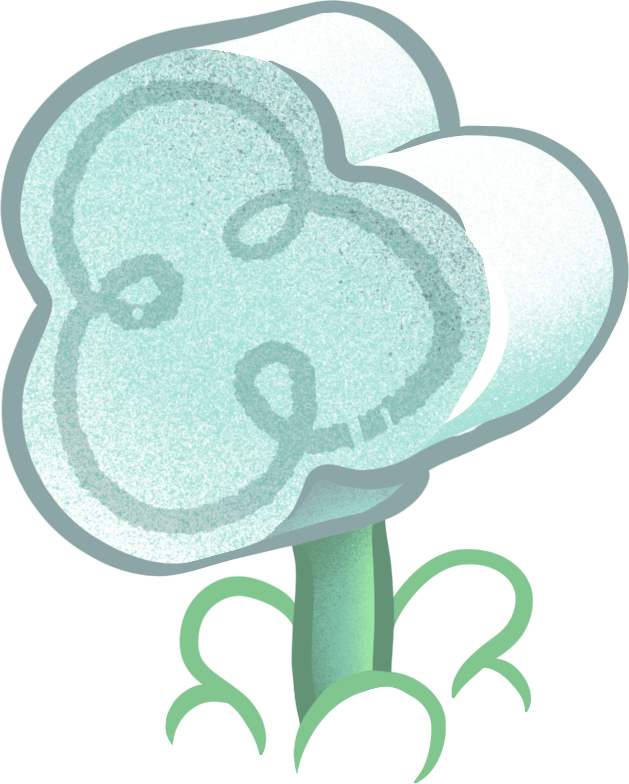

Xin Nian Kuai Le, Gong Xi Fa Cai!
Welcome the Year of the Sheep with food, lion dances, lanterns and live performance in Te Whanganui-a-Tara Wellington.
Two days of lanterns, lion dances & good food
All events →


 Year of the Sheep
Are you a sheep?
Find your zodiac animal →
Year of the Sheep
Are you a sheep?
Find your zodiac animal →
Festival moments
Gallery archive →


About the festival
Presented by the Asian Events Trust, the festival began as Wellington’s much-loved Chinese New Year Festival and became the Lunar New Year Festival in 2022 — a celebration of cultural diversity that gives local community groups a stage.
- When
- 20–21 February 2027
- Where
- [Venue], Wellington
- Hours
- [Opening times]
- Entry
- Free for everyone